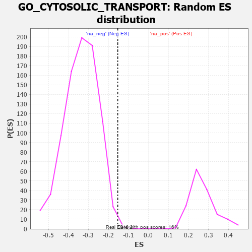

| | | Dataset | 7d |
| Phenotype | NoPhenotypeAvailable |
| Upregulated in class | na_neg |
| GeneSet | GO_CYTOSOLIC_TRANSPORT |
| Enrichment Score (ES) | -0.15359542 |
| Normalized Enrichment Score (NES) | -0.45570052 |
| Nominal p-value | 0.9976275 |
| FDR q-value | 1.0 |
| FWER p-Value | 1.0 |
Table: GSEA Results Summary
 Fig 1: Enrichment plot: GO_CYTOSOLIC_TRANSPORT
Fig 1: Enrichment plot: GO_CYTOSOLIC_TRANSPORT
Profile of the Running ES Score & Positions of GeneSet Members on the Rank Ordered List
| PROBE | GENE SYMBOL | GENE_TITLE | RANK IN GENE LIST | RANK METRIC SCORE | RUNNING ES | CORE ENRICHMENT | | 1 | CLN5 | | | 346 | 0.751 | 0.0155 | Yes |
| 2 | MYO1D | | | 1099 | 0.464 | -0.0429 | Yes |
| 3 | SRC | | | 1128 | 0.459 | -0.0102 | Yes |
| 4 | VPS54 | | | 1148 | 0.454 | 0.0232 | Yes |
| 5 | GOSR2 | | | 2050 | 0.298 | -0.0670 | Yes |
| 6 | MON2 | | | 2057 | 0.298 | -0.0443 | Yes |
| 7 | STX16 | | | 2116 | 0.289 | -0.0289 | Yes |
| 8 | SNF8 | | | 2119 | 0.288 | -0.0064 | Yes |
| 9 | RAB6B | | | 2133 | 0.286 | 0.0146 | Yes |
| 10 | YKT6 | | | 2571 | 0.217 | -0.0235 | Yes |
| 11 | BECN1 | | | 2828 | 0.179 | -0.0417 | Yes |
| 12 | GOSR1 | | | 2940 | 0.159 | -0.0432 | Yes |
| 13 | MAP2 | | | 3074 | 0.140 | -0.0489 | Yes |
| 14 | STX6 | | | 3087 | 0.138 | -0.0395 | Yes |
| 15 | MTMR2 | | | 3126 | 0.133 | -0.0338 | Yes |
| 16 | AKTIP | | | 3178 | 0.125 | -0.0304 | Yes |
| 17 | AP1G1 | | | 3210 | 0.121 | -0.0248 | Yes |
| 18 | BET1L | | | 3224 | 0.118 | -0.0171 | Yes |
| 19 | UBE2O | | | 3348 | 0.097 | -0.0249 | Yes |
| 20 | KIF1A | | | 3415 | 0.088 | -0.0263 | Yes |
| 21 | MAPK3 | | | 3589 | 0.062 | -0.0433 | Yes |
| 22 | RIC1 | | | 3627 | 0.055 | -0.0436 | Yes |
| 23 | VPS52 | | | 3758 | 0.033 | -0.0575 | Yes |
| 24 | GGA1 | | | 3952 | 0.002 | -0.0817 | Yes |
| 25 | EVI5 | | | 3960 | 0.001 | -0.0825 | Yes |
| 26 | VPS35 | | | 3989 | -0.006 | -0.0855 | Yes |
| 27 | SNX32 | | | 4012 | -0.010 | -0.0876 | Yes |
| 28 | VPS53 | | | 4036 | -0.014 | -0.0894 | Yes |
| 29 | SYS1 | | | 4038 | -0.014 | -0.0884 | Yes |
| 30 | VPS51 | | | 4137 | -0.030 | -0.0984 | Yes |
| 31 | VPS11 | | | 4202 | -0.041 | -0.1032 | Yes |
| 32 | GBF1 | | | 4215 | -0.044 | -0.1012 | Yes |
| 33 | VTI1A | | | 4224 | -0.046 | -0.0986 | Yes |
| 34 | GAK | | | 4249 | -0.050 | -0.0977 | Yes |
| 35 | STX5 | | | 4400 | -0.077 | -0.1106 | Yes |
| 36 | VPS29 | | | 4433 | -0.082 | -0.1082 | Yes |
| 37 | LRRK2 | | | 4467 | -0.087 | -0.1054 | Yes |
| 38 | SYT4 | | | 4590 | -0.116 | -0.1117 | Yes |
| 39 | RAB21 | | | 4620 | -0.122 | -0.1057 | Yes |
| 40 | CHMP3 | | | 4660 | -0.129 | -0.1005 | Yes |
| 41 | RAB14 | | | 4784 | -0.155 | -0.1038 | Yes |
| 42 | SNX2 | | | 4966 | -0.191 | -0.1116 | Yes |
| 43 | WDR81 | | | 5024 | -0.203 | -0.1028 | Yes |
| 44 | RAB7A | | | 5302 | -0.271 | -0.1164 | Yes |
| 45 | RAB9B | | | 5489 | -0.316 | -0.1149 | Yes |
| 46 | LAMP1 | | | 5796 | -0.404 | -0.1217 | Yes |
| 47 | DCTN1 | | | 5950 | -0.454 | -0.1053 | Yes |
| 48 | GCC2 | | | 5994 | -0.470 | -0.0736 | Yes |
| 49 | VAMP3 | | | 6043 | -0.487 | -0.0412 | Yes |
| 50 | EEA1 | | | 6430 | -0.631 | -0.0402 | Yes |
| 51 | ARL1 | | | 6438 | -0.636 | 0.0091 | Yes |
| 52 | CLN3 | | | 6580 | -0.699 | 0.0465 | Yes |
| 53 | RAB5A | | | 6655 | -0.741 | 0.0956 | Yes |
| 54 | SNX3 | | | 6934 | -0.893 | 0.1310 | Yes |
Table: GSEA details [plain text format]

Fig 2: GO_CYTOSOLIC_TRANSPORT: Random ES distribution
Gene set null distribution of ES for GO_CYTOSOLIC_TRANSPORT